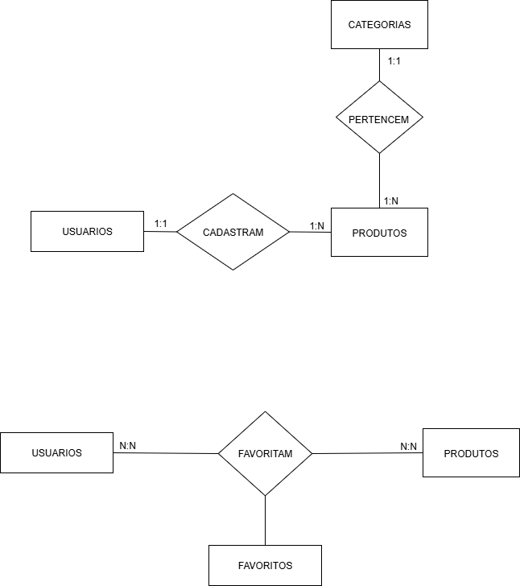
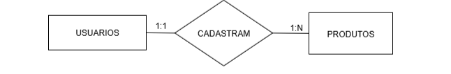
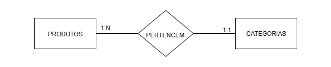
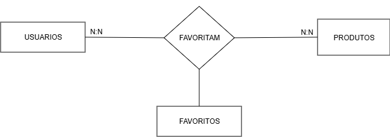
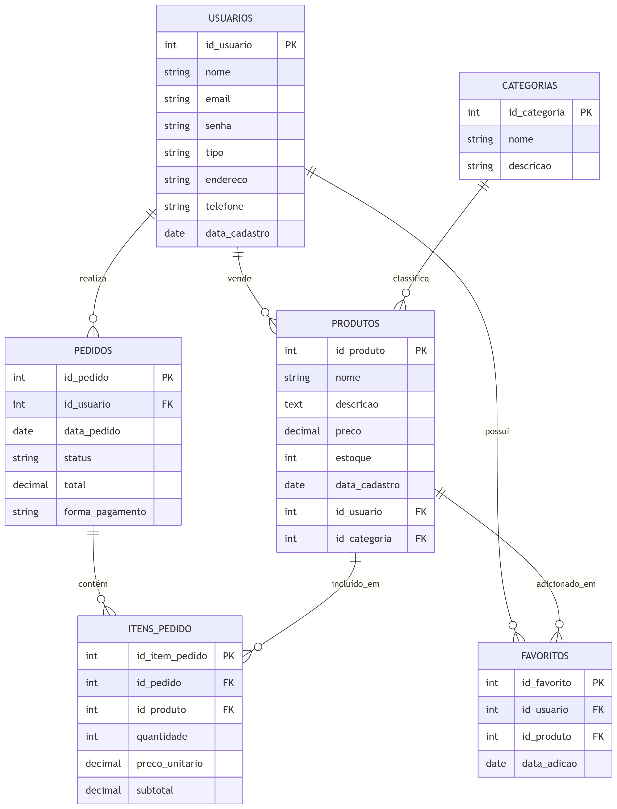

Do Modelo Conceitual ao Físico na prática
A modelagem de dados é o processo de criar um plano visual ou um diagrama que define a estrutura de um banco de dados. Este processo é dividido em três fases:
Nesta fase, identificamos as entidades do nosso sistema de "Feirinha Virtual" e como elas se relacionam.

Modelo Conceitual da Feirinha Virtual.
As cardinalidades descrevem a quantidade de instâncias de uma entidade que se relacionam com instâncias de outra.

Relacionamento 1:N entre Usuário e Produto.

Relacionamento 1:N entre Categoria e Produto.

Relacionamento N:M entre Usuário e Favoritos.
Aqui, convertemos as entidades e relacionamentos em tabelas e colunas, adicionando as chaves primárias e estrangeiras.
Veja como as tabelas seriam representadas no modelo lógico:

Relacionamento N:M entre Usuário e Favoritos.
Nesta etapa final, o modelo lógico é adaptado para um SGBD específico, adicionando detalhes como tipos de dados exatos e restrições. No nosso caso, usaremos a sintaxe do PostgreSQL.
-- Criação da tabela de Usuários
CREATE TABLE usuarios (
usuario_id SERIAL PRIMARY KEY,
nome VARCHAR(255) NOT NULL,
email VARCHAR(255) UNIQUE NOT NULL
);
-- Criação da tabela de Categorias
CREATE TABLE categorias (
categoria_id SERIAL PRIMARY KEY,
nome VARCHAR(100) NOT NULL
);
-- Criação da tabela de Produtos
CREATE TABLE produtos (
produto_id SERIAL PRIMARY KEY,
nome VARCHAR(255) NOT NULL,
descricao TEXT,
preco DECIMAL(10, 2) NOT NULL,
estoque INTEGER DEFAULT 0,
usuario_id INTEGER REFERENCES usuarios(usuario_id),
categoria_id INTEGER REFERENCES categorias(categoria_id)
);
-- Criação da tabela de Favoritos (Tabela N:M)
CREATE TABLE favoritos (
usuario_id INTEGER REFERENCES usuarios(usuario_id),
produto_id INTEGER REFERENCES produtos(produto_id),
data_favoritado TIMESTAMP DEFAULT CURRENT_TIMESTAMP,
PRIMARY KEY (usuario_id, produto_id)
);